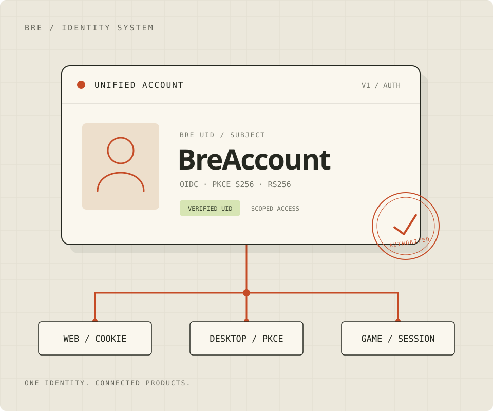

UNIFIED IDENTITY & AUTHENTICATION
BreAccount
一个身份，
连接每一个产品。
为游戏与软件构建统一账号底座。从网页、桌面到微信小程序，把登录、身份绑定、应用授权与会话撤销收在一套清晰的认证体系中。
看看身份如何连接产品
- SUBJECT / 身份主体
- 统一 Bre UID
- CLIENT / 接入终端
- 网页 · 桌面 · 小程序
- BOUNDARY / 授权边界
- 按产品隔离访问
01 / SYSTEM ARCHITECTURE
身份在中心，
边界在每一次访问。
我将账号能力组织为模块化单体，分离 HTTP 入口、协议处理、身份渠道与事务持久层。产品共用账号主体，每个客户端保留独立的访问范围与回调配置。
公开认证入口
注册与账号中心 · OIDC · 微信小程序 / 网站扫码
游戏后端入口
密码直登 · SSO 会话兑换 · Introspection · 健康检查
公开与内部双监听 / 客户端认证 / 请求边界 / 凭据用途校验
身份渠道与解析
GitHub / Google / QQ / 微信
Provider 验证凭证，Repository 处理身份归属与绑定。
协议与产品授权
OIDC / PKCE S256 / RS256
授权码、资源 audience、刷新轮换与应用登录记录。
会话与账号管理
Cookie / Bearer / Game Session
近期验证、会话轮换、按产品和单次登录撤销。
事务 / 行锁 / 唯一约束 / 过期清理
身份渠道通过接口注入；网页登录 OAuth 与短期 code 交换各自适配，共用账号与身份存储。
02 / ENGINEERING DECISIONS
登录之后，
还有这些问题要解决。
把协议接通只是起点。我围绕重复请求、并发竞争、凭据泄露、身份变化和退出语义设计状态流转，让每一条认证路径都有明确的归属、期限和消费规则。
- 01
统一身份，隔离产品权限
IDENTITY / AUDIENCE以 Bre UID 统一账号主体，通过 Product、Client 和 audience 组织产品与平台。校验 RS256 签名、issuer、有效期和 token_use，拒绝跨产品凭据与 ID Token 访问业务接口。
- 02
授权码只成功兑换一次
TRANSACTION / SINGLE USE将授权码消费与凭据创建放在同一事务。带有效期和未消费条件的更新配合影响行数检查，使并发兑换只有一次成功；授权码签发后保留完整的有效期。
- 03
刷新轮换与重放撤销
ROTATION / REPLAY DETECTION刷新凭据仅存哈希，每次使用即轮换。通过授权记录行锁与条件更新控制并发；发现旧凭据重放，撤销整个刷新家族。刷新不延长原授权的绝对期限。
- 04
并发建号与身份升级
UNIQUE INDEX / IDENTITY RESOLUTION首次第三方登录在事务内创建账号和身份，唯一冲突后完整回滚并重查。微信 OpenID 升级 UnionID 时沿用原 UID；标识指向不同历史账号时明确拒绝合并。
- 05
Cookie 与 Bearer 共用账号体系
SESSION / TRUST BOUNDARY网页使用 Cookie、CSRF 和 Origin 校验；小程序使用独立 audience 与用途的 JWT，并检查数据库会话。无效 Bearer 不回退 Cookie，重新验证时轮换会话，退出后撤销中央状态。
- 06
扫码、绑定与敏感操作
STATE / RECENT AUTHENTICATION扫码状态绑定发起浏览器、渠道和时限，事务保证一次性消费。将登录、绑定和重新验证意图保存在服务端，敏感操作要求近期验证，并保护最后一种可用登录方式。
- 07
从 OIDC 连接到游戏会话
SSO / BACKEND CREDENTIAL游戏后端完成客户端认证后，将 OIDC Access Token 一次性兑换为可撤销的游戏会话；密码直登复用统一账号。游戏凭据仅存哈希，登录记录统一纳入账号中心管理。
- 08
把注册资格做成有界流程
CHALLENGE / RATE LIMIT图形验证码后进入限时数学挑战，首题失败提供一次较易题。答对后签发 30 秒一次性注册许可；缓存容量与令牌桶限流共同控制注册请求和短期状态。
03 / CONNECTED LOGIN FLOW
从一次登录，
到游戏里的同一个人。
网页与桌面使用统一授权流程，游戏后端通过内部接口兑换会话。产品围绕稳定 UID 建立业务数据，认证与玩法保持独立。
- 01 / AUTHORIZE →
产品发起授权
生成独立 state、nonce 与 PKCE 参数，使用登记的客户端和回调地址。
- 02 / IDENTIFY →
统一确认身份
复用浏览器会话，或通过密码、第三方授权及微信扫码完成认证。
- 03 / EXCHANGE →
后端兑换凭据
一次性授权码兑换 Token；游戏后端继续兑换独立的游戏会话。
- 04 / CONNECTED
按产品访问
保持相同 Bre UID，以客户端和 audience 限定访问，在账号中心管理登录。
撤销语义按凭据类型设计：中央会话检查数据库状态；业务 JWT 本地验签以短有效期限制撤销后的剩余访问窗口。
04 / ENGINEERING DELIVERY
把认证系统，
做成可以接入的服务。
我把客户端体验、故障恢复和部署工具纳入同一套工程交付。应用通过 SDK 接入协议，服务通过持久化保存状态，维护通过脚本完成构建、备份和恢复。
看看游戏服务端的另一面- 可复用 SDK 与多端示例
- Go SDK 封装 Discovery、PKCE、身份验证、刷新、撤销和游戏会话。桌面凭据进入系统密钥库，网页 OAuth 凭据由后端保管，浏览器持有 HttpOnly Cookie。
- 覆盖异常与并发的验证体系
- SQLite 快速测试与 PostgreSQL 隔离 schema 回归，覆盖并发消费、刷新重放、跨产品隔离、绑定冲突和重启恢复；CI 集成 race 检查、静态检查与无 CGO 构建。
- 单二进制与清晰的部署边界
- go:embed 嵌入账号页面，systemd 管理进程，Caddy 代理公开入口。双监听完整绑定后启动，支持超时控制和优雅退出，访问日志省略查询串和凭据。
- 持久化与加密备份链路
- 数据库保存会话和授权流程，服务重启后延续有效状态。备份工具支持快照、历史保留、SHA-256 校验及恢复；通过 SSH 获取归档，在维护机器 GPG 加密后上传私有 R2 并下载核对。